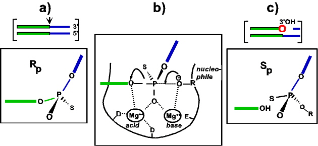

|
 |
| Illustration of the stereochemistry of the cleavage reactions.
a) Vertical arrow (point of hydrolysis at one end of the transposon); green (transposon DNA); blue (flanking donor DNA); S (sulphur atom replacing a non-bridging oxygen). The frame shows the terminal target phosphodiester bond in its Rp-diastereomeric form. Only the cleaved strand is shown for simplicity. b) Proposed transition-state intermediate is shown with the nucleophile, R-O, attacking from the right in an in-line configuration with the leaving group (the 3'OH-carrying end of the transposon). Several different nucleophiles including H2O and glycerol can be used in strand cleavage. The proposed role of the DDE triad in co-ordinating a pair of divalent metal ions and their role as Lewis acids and bases in promoting the reaction is indicated. c) Red circle (free 3'OH resulting from the hydrolysis at one end of the transposon). The framed figure shows the free 3'OH group and the target phosphate in the inverted, Sp, configuration. adapted from Turlan, C. and Chandler, M. (2000) |